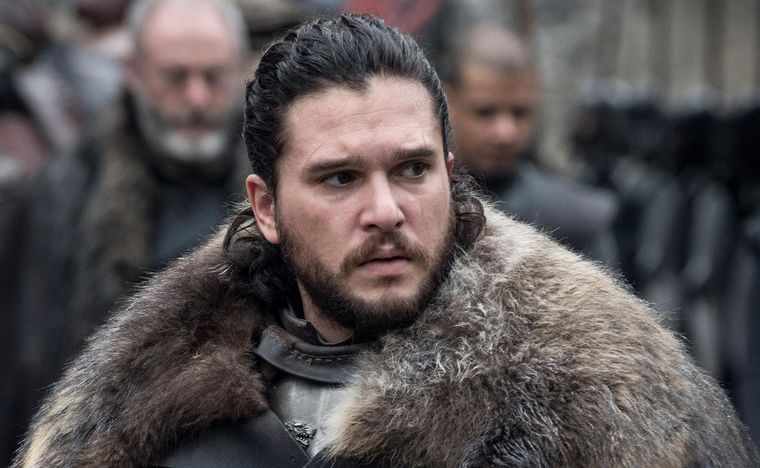
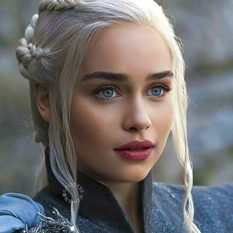
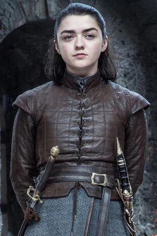
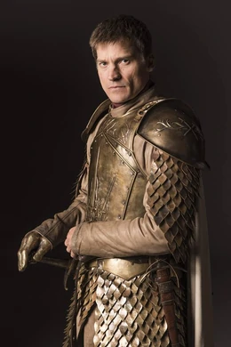
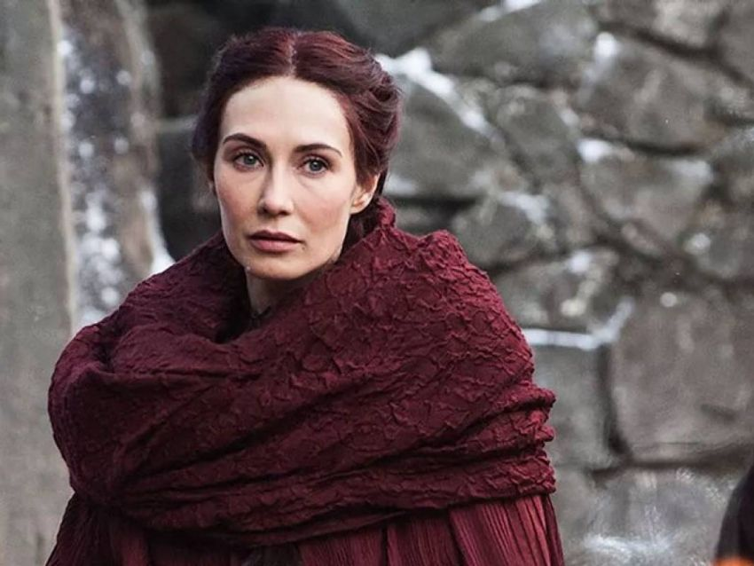
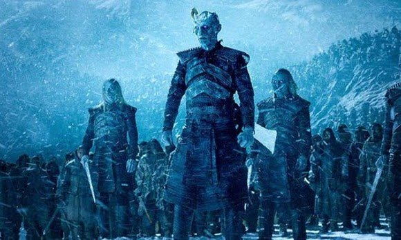

Personajes
Tyrion Lannister
Es hijo de Tywin Lannister, el señor más rico de los Siete Reinos, y hermano menor de Jaime Lannister y Cersei Lannister. Por ser enano, Tyrion es considerado una vergüenza par su familia y el hecho de que su madre haya muerto durante su nacimiento le valió el rechazo de su padre. Tyrion siempre compensó su baja estatura con su inteligencia y sabiduría.

Jon Snow
Jon Snow es el hijo bastardo de Eddard “Ned” Stark. Si bien su origen es un misterio durante las primeras temporadas de la serie, Jon logra convertirse en uno de los personajes más relevantes de la historia. Tiene un lobo huargo llamado ‘Ghost’.
Daenerys Targaryen
Daenerys Targaryen es princesa de la Casa Targaryen, la hija menor del rey Aerys II Targaryen. Tras la Guerra del Usurpador, en la que murieron su padre y su hermano mayor Rhaegar, ella y su hermano Viserys vivieron en el exilio; luego es obligada a casarse con Khal Drogo, de quien termina enamorada y convirtiéndose en la madre de los dragones.
Arya Stark
Arya Stark es la hija menor de Eddard Stark y Catelyn Stark; hermana de Robb, Bran, Rickon y Sansa Stark. Su medio hermano es Jon Snow. La vida de Arya cambia por completo después de una tragedia y se convierte en una gran guerrera.
Cersei Lannister
Cersei Lannister es la reina de los Siete Reinos. Se casó con el rey Robert Baratheon y tuvo tres hijos, Joffrey, Myrcella y Tommen. Mantuvo una relación muy cercana con su hermano gemelo Jaime Lannister y despreció a su hermano menor Tyrion Lannister.

Jaime Lannister
Jaime Lannister es el hermano mellizo de Cersei Lannister y hermano mayor de Tyrion Lannister. Siempre fue el favorito de su padre y durante mucho tiempo llevó la capa de Lord Comandante de la Guardia Real en Desembarco del Rey.
Melissandre
Mejor conocida como “La Bruja Roja”, es una sacerdotisa de Asshai. Ella cree que sus visiones la llevarán al verdadero Rey de Westeros. Posee poderes proféticos y siempre se muestra misteriosa, serena y poderosa.
Caminantes Blancos
Más allá del Muro viven los Caminantes Blancos, muertos vivientes, difíciles de exterminar y quienes causarán muchos problemas mientras los demás personajes intentan conquistar el Trono de Hierro.
